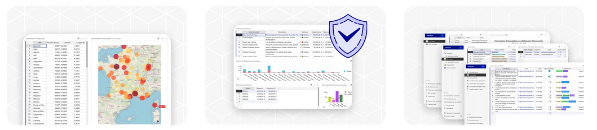
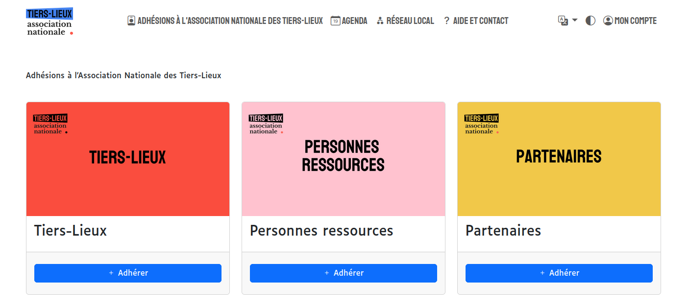
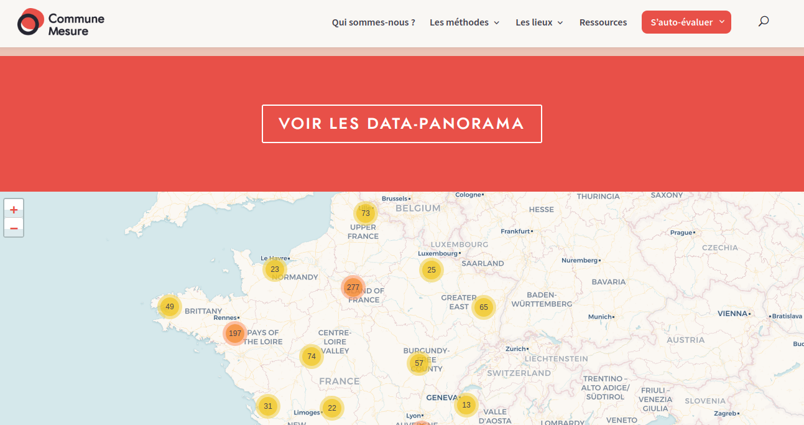
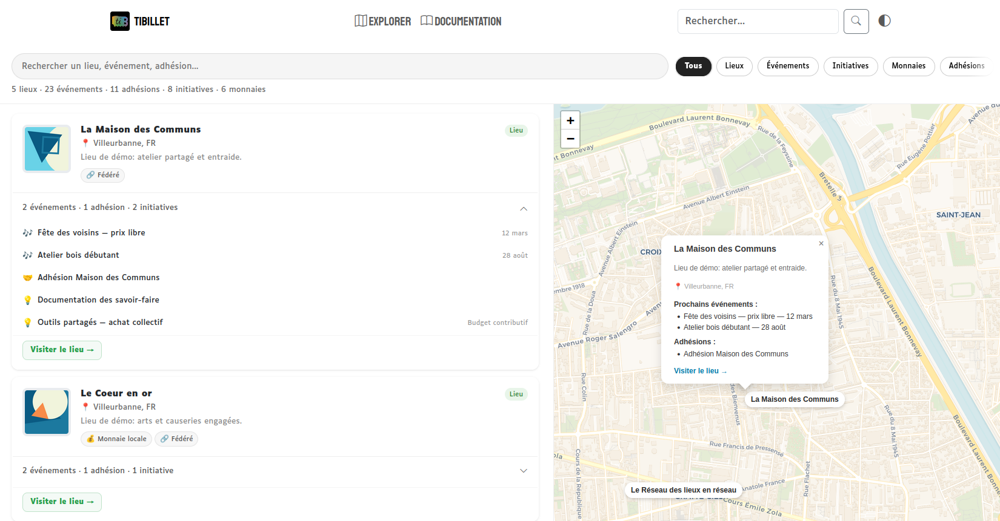

Plaidoyer pour l'intéropérabilité : GRIST + Newsletter + COMMUNE MESURE + TIBILLET pour l'écosystème des tiers-lieux.¶
Résumé : TiBillet collecte, Grist structure, les territoires rayonnent. Trois cas d'usage concrets pour démontrer la puissance d'une infrastructure numérique souveraine et fédérée au service des tiers-lieux et de leurs réseaux régionaux.\ Principe fondateur : les données des tiers-lieux sont déjà là — dans Grist. La question n'est plus de les collecter, mais de les faire vivre, se mettre à jour automatiquement, et s'activer au service des lieux eux-mêmes.
Le constat de départ¶
L'écosystème des tiers-lieux en France souffre d'un paradoxe : une richesse extraordinaire d'initiatives locales, mais une donnée éparpillée, mal structurée, difficile à valoriser collectivement. Les réseaux régionaux (15 réseaux actifs soutenus par l'ANCT) et l'ANTL gèrent des adhésions, organisent des événements nationaux, mesurent des impacts — mais chacun avec ses propres outils, souvent non interopérables.
Grist : une base déjà là, riche, mais statique¶

Grist s'est imposé comme le socle de données de référence pour les tiers-lieux en France. Et ce n'est pas qu'un outil parmi d'autres : c'est désormais l'infrastructure centrale de toute la connaissance de l'écosystème.
-
La base nationale des tiers-lieux est alimentée et structurée dans Grist, indexée dans Meilisearch, exposée via une API publique (https://donnees.tiers-lieux.fr). Chaque fiche contient un
Identifiant_national(UUID) unique et pérenne. -
Le Recensement national 2026 — lancé le 9 mars 2026 par France Tiers-Lieux, l'ANTL, les réseaux régionaux, Commune Mesure et RFFLabs — est lui aussi opéré sur Grist. C'est la troisième édition de cet exercice de cartographie nationale. Il a notamment été construit et piloté côté technique par Guillaume Lung-Tung du réseau régional de La Réunion (RTLx), preuve que l'écosystème sait s'auto-organiser autour d'outils communs.
-
Les réseaux comme RLTx et A+ C'est mieux utilisent déjà Grist pour connecter leurs données à des outils de cartographie (GoGo Carto). Le questionnaire RCI-TL de Commune Mesure est hébergé sur Grist (
grist.incubateur.anct.gouv.fr).
Le constat est donc le suivant : toutes les données des tiers-lieux à jour sont déjà présentes et disponibles dans Grist. Le problème, c'est qu'elles sont figées dans le temps. Une fois le recensement terminé, une fois la fiche remplie, la donnée vieillit. Les adhésions changent, les contacts tournent, les événements se créent — et Grist ne le sait pas automatiquement.
La vraie question n'est plus "comment collecter la donnée ?" mais "comment la maintenir vivante dans le temps ?"
TiBillet : le point de contact vivant avec les lieux¶
TiBillet est une boîte à outils libre et fédérée — billetterie, adhésions, caisse, budgets participatifs — conçue pour et par les acteurs culturels et associatifs. Utilisé par plus de 300 lieux divers : Épiceries associatives, tiers lieux culturels, festivals de cirque, collectifs alimentaires, réseaux régionaux et départementaux... Autant de diversité que dans l'écosystème des tiers lieux car il y a été construit comme un commun numérique par, pour et dans ces lieux. Son architecture multi-tenant, son agenda fédéré et son API ouverte en font un outil de collecte et de mise en réseau sans équivalent dans l'écosystème.
Mais TiBillet peut aller plus loin que la simple collecte : il peut devenir le point d'entrée qui exploite les données Grist pour simplifier radicalement la vie des tiers-lieux.
Exemple concret : créer un espace TiBillet devient anecdotique. Un tiers-lieu n'a qu'à renseigner son nom — TiBillet interroge l'API Grist, récupère automatiquement toutes les informations (adresse, contact, description, logo, réseau régional, labels) et pré-remplit la création de l'espace. Les futures informations utiles — Mesure d'impact avec Commune Mesure, événements nationaux, agendas fédérés — sont d'emblée liées à Grist via l'Identifiant_national.
La question n'est pas "pourquoi connecter ces deux outils ?" mais "pourquoi ne pas l'avoir fait plus tôt ?"
Cas d'usage n°1 — Adhésions à jour, newsletters ciblées avec Brevo ( ou Ghost / ListMonk )¶

Le problème aujourd'hui¶
Les réseaux régionaux gèrent leurs adhésions de tiers-lieux dans des tableurs, des formulaires Google ou des outils hétérogènes. Résultat : la base Grist n'est pas à jour, les listes de diffusion Brevo contiennent des contacts obsolètes (lieux fermés, contacts partis), et les newsletters partent dans le vide ou, pire, vers les mauvaises personnes.
La solution TiBillet × Grist × Newsletter¶
TiBillet gère nativement les adhésions avec suivi des renouvellements, statuts actifs/expirés et données de contact. La Rosée, la Compagnie des Tiers lieux, Relief et la Réunion des tiers lieux utilisent ou sont en migration. Tilino et BFC sont en contact pour explorer et en attente de formation. Chaque réseau régional pourra disposer de son propre tenant TiBillet pour gérer ses membres (les tiers-lieux adhérents).
Le formulaire d'adhésion proposé à destination des lieux sera le même pour tous les réseaux, et la donnée sera remontée automatiquement dans GRIST. Paiements + donnée sémantique + newsletters : d'une pierre douze coups.
SUPER BONUS : Si le tiers-lieux à déjà rempli la fiche de recensement 2026, la donnée est déjà présente ! Son formulaire d'adhésion sur TiBillet est pré-rempli !
Le flux proposé :
Tiers-lieu remplit/renouvelle son adhésion sur TiBillet
↓
TiBillet met à jour le statut d'adhésion via webhook ou API
↓
Grist reçoit la mise à jour → base nationale synchronisée
↓
TiBillet envoie à Brevo le statut → liste de diffusion à jour
↓
Newsletter envoyée uniquement aux adhérents actifs
Ce que ça change concrètement¶
-
Fin de la double saisie : le tiers-lieu remplit une seule fois son formulaire d'adhésion. La donnée part au réseau régional ET national. La donnée circule.
-
Base Grist toujours à jour : le champ
Adherent_ANTLouAdherent_reseau_regionalreflète la réalité en temps réel, et non au gré des exports manuels. -
Segmentation Brevo précise : on peut cibler "tous les adhérents actifs de Bretagne Tiers-Lieux", "tous les lieux labellisés Manufacture de Territoires encore à jour de cotisation", etc.
-
Souveraineté des données : les données restent dans l'infrastructure des réseaux (Grist hébergé par l'ANCT, TiBillet auto-hébergé), sans dépendance à un CRM propriétaire.
Cas d'usage n°2 — Mesure de l'impact social avec le framework Commune Mesure¶

Le problème aujourd'hui¶
Commune Mesure propose un framework d'évaluation d'impact reconnu (initié en 2018, financé par French Impact, ANCT, ADEME). Son outil phare, le RCI-TL (Indicateur de Capacité Relationnelle des Tiers-Lieux), est un questionnaire hébergé sur Grist qui mesure 5 dimensions du lien social :
-
Rapport à soi et encapacitation personnelle
-
Relations à l'intérieur du lieu
-
Rapport au territoire
-
Rapport à la société
-
Rapport à l'environnement
Mais la collecte reste manuelle : les tiers-lieux diffusent eux-mêmes le lien vers le questionnaire Grist à leurs usagers. La donnée est peu contextualisée (quel événement ? quel lieu ? quelle période ?), et le taux de réponse est faible.
La solution TiBillet × Grist × Commune Mesure¶
TiBillet est en contact direct avec les publics des tiers-lieux : à chaque événement, à chaque billet scanné, à chaque adhésion renouvelée, une interaction numérique a lieu. C'est le moment idéal pour déclencher une collecte de données d'impact.
Le flux proposé :
Participant assiste à un événement TiBillet (billet scanné à l'entrée)
↓
TiBillet envoie (J+1) un email/SMS avec le lien vers le questionnaire RCI-TL
→ Lien pré-rempli avec : nom du lieu, type d'événement, date, région
↓
Le participant répond sur le formulaire Grist (Commune Mesure)
↓
Grist agrège les réponses → tableau de bord automatique par lieu, par réseau, par région
↓
Les données alimentent l'observatoire national des tiers-lieux
Ce que ça change concrètement¶
-
Volume de données multiplié : TiBillet touche des dizaines de milliers de participants par an. Un taux de réponse de 5% sur 10 000 billets = 500 évaluations RCI-TL, contextualisées et géolocalisées.
-
Données contextualisées : on sait quel type d'événement (concert, atelier, marché), dans quel lieu, à quelle période. L'analyse devient comparative et longitudinale.
-
Auto-évaluation facilitée : le tiers-lieu n'a rien à faire. TiBillet automatise la diffusion, Grist agrège, le tableau de bord s'affiche.
-
Plaidoyer renforcé : les réseaux régionaux et l'ANTL disposent de données d'impact réelles, quantifiées, pour leurs rapports à l'ANCT, à la Banque des Territoires, à l'ADEME.
"Permettre la visualisation des effets des tiers-lieux" — mission n°1 de Commune Mesure. TiBillet est le déclencheur qui manquait ?
Cas d'usage n°3 — Les Journées Toujours Ouvertes : onboarding en 3 clics¶

Le contexte¶
Les Journées Portes Toujours Ouvertes (JPTO) sont le festival national des tiers-lieux : des centaines de lieux ouvrent leurs portes simultanément sur tout le territoire. Chaque édition nécessite que chaque tiers-lieu participant :
-
Crée ou revendique sa fiche sur la plateforme nationale
-
Déclare ses événements pour l'occasion
-
Soit visible sur les agendas régionaux et nationaux
Aujourd'hui, ce processus est laborieux : emails, formulaires, relances manuelles par les réseaux régionaux.
La solution TiBillet × Grist : onboarding pré-rempli¶
Grist contient déjà la fiche de chaque tiers-lieu référencé : nom, adresse, contact, description, labels, réseau régional, Identifiant_national (UUID public). C'est une mine d'or pour l'onboarding.
Le flux proposé :
L'ANTL / le réseau régional envoie un lien personnalisé au tiers-lieu :
→ https://tibillet.fr/jto/onboarding?grist_id=15ecb291-e759-4cfe-b9b0-55dbf2923640
↓
TiBillet interroge l'API Grist (GET /tiers-lieux/{id})
↓
Formulaire de création de tenant TiBillet pré-rempli :
nom, adresse, logo, description, email, réseau régional
↓
Le tiers-lieu valide, personnalise, crée ses événements JTO
↓
Les événements remontent automatiquement :
→ Agenda fédéré TiBillet du réseau régional
→ Cartographie nationale (ex: annuaire.tiers-lieux.fr)
→ Webhook Grist → mise à jour de la fiche tiers-lieu avec les événements JTO
Exemples de cartographie lié aux évènements à lier :
Ce que ça change concrètement¶
-
Onboarding en 3 minutes au lieu de 30 : le tiers-lieu n'a pas à ressaisir ses informations, déjà dans Grist.
-
Cohérence des données : le nom, l'adresse, le logo utilisés dans TiBillet sont les mêmes que dans la base nationale. Fin des doublons et des variantes orthographiques.
-
Visibilité maximale : les événements JPTO apparaissent automatiquement sur les agendas fédérés TiBillet des réseaux régionaux ET sur la cartographie nationale Grist/GoGo Carto.
-
Retour de données vers Grist : après les JPTO, TiBillet peut renvoyer des données d'impact vers Grist — nombre de participants, types d'événements, billetterie — enrichissant la fiche du tiers-lieu pour l'observatoire national.
-
Réplicable à d'autres événements : ce modèle fonctionne pour toute mobilisation nationale (Semaine de la transition, Fête des voisins, etc.).
Pourquoi c'est possible techniquement¶
Côté Grist¶
-
API REST publique exposant toutes les fiches tiers-lieux avec leur
Identifiant_national -
Webhooks natifs (
POST /webhook/grist) déclenchés à chaque modification -
Formulaires Grist pour la collecte directe (utilisés par Commune Mesure/RCI-TL)
-
Interopérabilité prouvée avec GoGo Carto, Meilisearch, et d'autres outils
Côté TiBillet¶
-
Architecture multi-tenant Django : création d'un tenant = quelques secondes via API
-
API ouverte et webhooks sur les événements clés (adhésion, billet scanné, événement créé)
-
Agenda fédéré : les événements d'un tenant remontent automatiquement aux agendas des réseaux configurés
-
Formulaires d'adhésion personnalisables avec champs custom (ex:
identifiant_national_grist) -
Licence AGPLv3 : le code est libre, l'intégration peut être contribuée en commun
Le liant : un identifiant commun¶
La clé de voûte de cette interopérabilité est l'Identifiant_national (UUID) présent dans Grist pour chaque tiers-lieu référencé. En stockant cet identifiant dans le profil du tenant TiBillet, on crée un pont permanent et sans ambiguïté entre les deux systèmes.
L'autre liant : Les Communs.
Guillaume et Jonas se connaissent et parlent le même langage commun. TiBillet a été construit à la Raffinerie sur l'île de la Réunion : on sait travailler ensemble. Former les réseaux régionaux à Grist comme à TiBillet, ce sera beaucoup plus rigolo à deux :)
Ce que ce plaidoyer demande¶
-
Un groupe de travail technique réunissant la Coopérative Code Commun (TiBillet), l'équipe Grist de l'ANTL, et des représentants de réseaux régionaux volontaires.
-
Un pilote sur les JPTO : tester l'onboarding pré-rempli sur une édition, avec 2-3 réseaux régionaux, pour valider le flux et mesurer le gain de temps.
-
Une contribution open source : les connecteurs TiBillet ↔ Grist développés dans le cadre du pilote sont reversés au commun, documentés, réutilisables par tous les réseaux.
-
Une intégration dans la feuille de route ANTL : que l'interopérabilité TiBillet × Grist devienne un standard recommandé pour les réseaux régionaux, au même titre que Grist est aujourd'hui le standard pour la base nationale.
En résumé¶
| TiBillet | Grist | |
|---|---|---|
| Rôle | Collecter, activer, fédérer | Structurer, stocker, exposer |
| Force | Contact direct avec les publics et les lieux | Base de référence nationale, interopérable |
| Ensemble | Un flux de données vivant, souverain, au service des territoires |
TiBillet et Grist partagent la même philosophie : des outils libres, ouverts, pensés pour l'intérêt commun. Leur interopérabilité n'est pas une question technique — c'est une question de cohérence avec les valeurs de l'écosystème des tiers-lieux.
Rédigé dans le cadre de la réflexion sur les communs numériques pour les tiers-lieux. Contributions bienvenues.